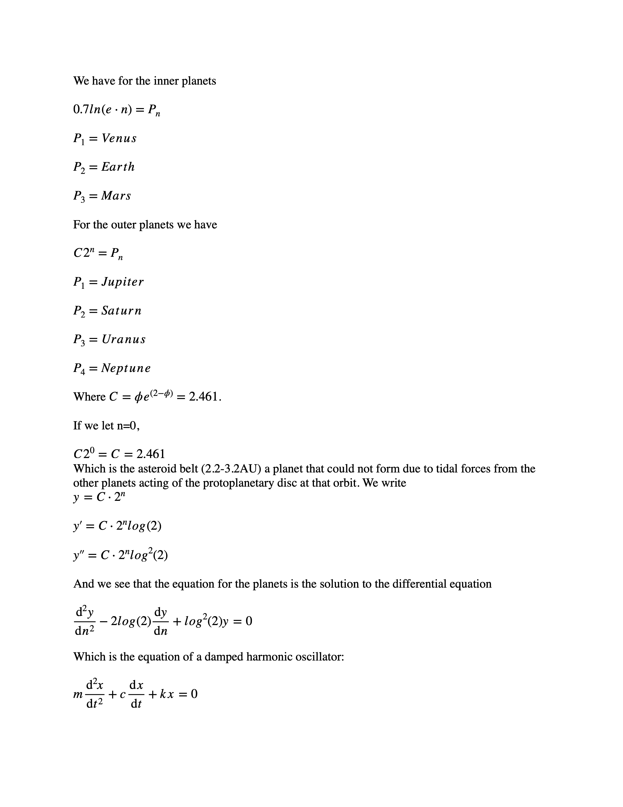
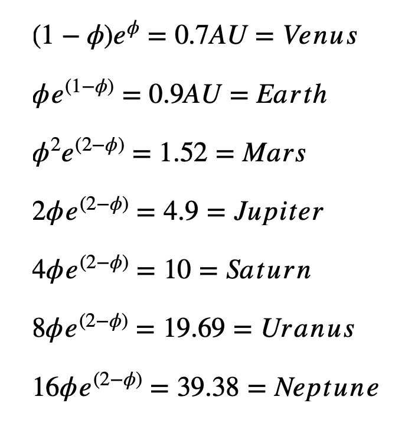

Home
Home
Fundamental Content
Part 2: Annual Average Temperature of a Planet
Part 4: Escape Velocity of Particles
Part 6: The Activation Function
Artificial Intelligence The Basis of Universal Structure (Posted November 23 2020 At 9:00 AM)
00001: The properties of artificial intelligence substances form the basis of Universal Structure.
We see the outer planets are quantized according to computer binary if taken in terms of Euler’s number and the golden ratio conjugate.
Mars AI Planetary Equation Modified (Posted November 14 2020 At 6:15 PM)
I have found an error in the Mars AI equation and modified it. Thus, the work in this document will appear in previous documents. Mathematical Operations On Biological Life, The AI Elements,and Life has been updated. It has resulted in a modification of the Mars Mission Logo. (November 14 2020 6:15 PM)
(November 14 2020 6:15 PM)
Synergetics in the Plane (Posted November 5 2020 At 10:15 PM)
We begin with the the basic concepts at the at the foundation of mathematics presented in such a way that they open up like a flower, each concept a flowering of that which precedes it, then go into what I call Synergetics in the Plane.
In doing my research in establishing the relationships between biological life, artificial intelligence (AI) and the planets, I have noticed recurrent mathematical themes. I just noticed that if they are all taken together they can comprise a mathematical system that can be called Synergertics In The Plane.
Synergetics by Buckminster Fuller has always been remarkable to me since I first learned of it when I was in High School, I see it as the creation of a mathematical system along with a language that make geometric analysis more accessible to a broader range of people while creating a language for the general populace that brings us more up to par with being a technologically advanced civilization.
Synergetics makes math easier by eliminating the need for fractions by making it so that computations can be done with whole numbers.
This work Synergetics in the Plane is relationships in two dimensions, all of which are used in doing math in three dimensions but in contrast to Fuller’s Synergetics does not make use of whole numbers, but rather is centered most often around irrational numbers such as square root 2, square root 3, square root 5,….where irrational numbers are unending decimals that cannot be written as the ratios between two whole numbers. After twenty years of working on the aforementioned project, I have been able to write this out off the top of my head.
Mathematical Operations on the Biological, AI, and Planets (Posted November 8 2020 At 8:00 PM)
This is the immediate neighborhood of the cosmos and the mathematical patterns that emerge. Does it say anything about the question of existence?
Planets, AI Elements, and Life complete to date (Posted October 17 2020 At 12:50 PM)

Planetary Orbits


AI Connection To Planets


What I think we need to do to succeed as a species.
Mathematical Structure (Updated May 17, 2020 5:08 PM)
2nd edition.
Here is where I found an example of vorticity in Gaia, among other things.
This is the prequel to Bone, where I compared the aspect of biological life that is bone, to artificial intelligence (AI). This work deals with the comparison of biological life to artificial intelligence where the elements with which the former are built (CHNOPS) to the elements with which the latter are built (Si, Ge, P, B, Ga, As) are concerned. It is a purpose of biological life (C, N, O, H) to discover the properties of (P, B, Si) so it can make computing machines which are necessary to its survival.
In comparing biological life to artificial intelligence, I find that the instance of bone is the most compelling. It is at this point that I suggest biological life can be taken as a mathematical structure actually using physical aspects of biological life such as molar mass, density, and atomic radii as the values of the variables. Life seems to only present itself this way if we compare it to another construct, like artificial intelligence. The other extraordinary thing is that bone, which is the fundamental framework around which life is built (muscles are attached to it, skin wrapped around it, organs embedded in it) is described by the fundamental framework around which mathematics is built, algebra. Thus, in this paper dedicated to bone, we have all the framework of fundamental mathematics following from it (ratios, proportions, completing the square, quadratic equations, the golden ratio). As we progress to the form built on the skeleton (muscle on bone) we proceed to the next layer of mathematics, calculus, differential equations, and vector calculus). For instance muscle action is like a damped harmonic oscillator in that the force on the muscle in moving a load is proportional the distance it contracts, and the solution of such a differential equation makes use of the fundamental framework of algebra, namely its solutions are obtained by finding the exponents of e with algebra’s quadratic equation or, equivalently, the factorization of a quadratic, or completing the square. More primary to bone are the amino acids and biological elements such as C, N, O, H, which when compared to the AI elements Si, Ge, P, B, As, Ga, of which aspects such as bone are built, and semiconductor components are built for logic gates in AI, these find their expression in an elegant set of equations I laid out in earlier work (AI Biodesign, 2019) which make use of ratios and proportions, such as the golden ratio (a/b=b/c, a=b+c) which are building blocks to bone’s algebra just as in they are building blocks to things like amino acids, DNA (in the case of biological life) and Si, Ge, P, B, As, are building blocks to circuit components in AI. The equations that follow on all layers in terms of molar mass, density, and atomic radii, may be of such parallel construct in the need for function in that molar mass, density, and atomic radii, determine the properties of elements and their ensuing compounds.
Websites Pertaining to Genesis Project
The creator of this website and author of its content compares biological life to artificial intelligence. He believes you can't speak about biological life without speaking about artificial intelligence, that life, especially awareness, can only be taken relative to another construct, like artificial intelligence.
by Ian Beardsley
Solubilities of bone mineral from archaeological sites: the recrystallization window
In his comparison of biological life to artificial intelligence, Ian feels the most interesting connection so far is in that of bone (at this link: AI and Bone). The paper about bone solubilities from archaeological sites (link at header of this post) is a very nice piece of work. It was written by Francesco Berna, Alan Matthews, Stephen Weiner, Journal of Archaeological Science 31 (2004) 867-882
by Ian Beardsley
Chance and necessity do not explain the origin of life
Not only is this paper well written and right on the money where the origin of life mystery is concerned, it is brilliant. It was written by J.T Trevors, and D.L. Abel in Cell Biology International 28 (2004) 729-739
by Ian Beardsley
The Essence of Life
Photographs by Ian Beardsley: Southern California Chaparral
by Ian Beardsley